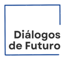
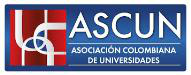
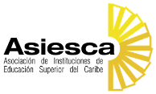
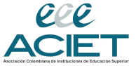

Cada IES conforma equipos
Equipos de 4 o 5 personas, preferiblemente liderados por un profesor, egresado o estudiante de maestría, con estudiantes de pregrado, bajo supervisión académica de la institución.
El Plan Padrino Milagro conecta equipos de estudiantes y docentes de Instituciones de Educación Superior con micro y pequeñas empresas afectadas por el terremoto del 10 de agosto de 2026, para acompañarlas técnicamente en su recuperación económica y en la construcción de una nueva visión de futuro.
Acompañamiento gratuito, estructurado y con supervisión académica. No es una donación ni una jornada puntual de voluntariado.

Diálogos
ASCUN
ASIESCA
ACIETEl terremoto de magnitud 7,4 del 10 de agosto de 2026, con epicentro cerca de San José del Palmar (Chocó), dejó una afectación severa en Chocó, Risaralda, Caldas, Quindío y Valle del Cauca. Junto al costo humano hay un tejido empresarial que debe decidir, en semanas, si vuelve a abrir.
Fuente: línea base publicada por la Red de Cámaras de Comercio.
La diferencia entre reabrir y cerrar definitivamente, en muchos casos, no será solo el dinero: será el acompañamiento. Carta de convocatoria a rectoras y rectores, 16 de agosto de 2026
Durante la pandemia, el Plan Padrino convocado por el Ministerio de Educación Nacional demostró que las instituciones colombianas pueden organizarse con rapidez, poner el conocimiento al servicio de quien lo necesita y trabajar sin competir entre ellas. Proponemos replicar esa lógica.
Equipos de 4 o 5 personas, preferiblemente liderados por un profesor, egresado o estudiante de maestría, con estudiantes de pregrado, bajo supervisión académica de la institución.
Una micro o pequeña empresa afectada por el terremoto, identificada con las cámaras de comercio y los gremios, con un interlocutor responsable y un reto prioritario claramente definido.
Diagnóstico, plan de trabajo con hitos, entregables aplicables al negocio y una Hoja de Ruta de Recuperación y Fortalecimiento a 90–180 días. Con medición de entrada y salida.
Cada empresa trabaja prioritariamente en un frente y, solo cuando es indispensable, en un segundo frente complementario. La digitalización es transversal a los cuatro.
¿Cómo estabilizamos financieramente el negocio?
¿Cómo recuperamos ingresos?
¿Cómo volvemos a operar de manera viable?
¿Qué debe cambiar para que la empresa sea viable después del terremoto?
Las necesidades especializadas de ingeniería, arquitectura, salud mental, litigios, seguros u otras materias reguladas se derivan a profesionales o servicios especializados. No constituyen el núcleo estándar del acompañamiento.
El Plan se apoya en cámaras, gremios, gobiernos y diagnósticos existentes. No crea estructuras paralelas ni duplica censos ya en curso.
Identifican y canalizan empresas afectadas con las bases existentes; apoyan la validación de elegibilidad y el contacto.
Propone y estructura la metodología común: diagnóstico, herramientas, formación de equipos y criterios de intervención. Secretaría técnica inicial.
Articulación institucional, coordinación general, comunicaciones y seguimiento de compromisos entre actores.
Movilizan a sus IES asociadas, facilitan la convocatoria y promueven la designación de equipos y responsables.
Seleccionan y supervisan equipos, designan tutor responsable, garantizan continuidad y definen el reconocimiento académico.
Designan interlocutor, entregan información, asisten a las sesiones y se comprometen activamente con la intervención.
Resolver pocos retos prioritarios y producir resultados concretos.
La gratuidad no elimina obligaciones para ninguna de las partes.
El empresario no debe quedar sin acompañamiento por cambios internos de la IES.
Uso responsable de la información empresarial. Acompañamos sin convertir la tragedia en vitrina institucional.
Aprovechar cámaras, gremios, gobiernos y diagnósticos existentes, evitando duplicaciones.
Iniciar con una cohorte manejable, medir resultados y ajustar antes de escalar.
El Plan Padrino Milagro pone el conocimiento, el talento y las capacidades de las Instituciones de Educación Superior al servicio de los empresarios afectados para ayudarlos a recuperar sus negocios. Pero también para que, cuando las condiciones lo permitan, aprovechen esta transición para revisar su modelo de negocio, identificar nuevas oportunidades, fortalecer sus capacidades y construir una nueva visión estratégica.
Así, el acompañamiento contribuye no solo a la recuperación inmediata, sino a un tejido empresarial más resiliente, sostenible y preparado para el futuro.
Si su negocio fue afectado por el terremoto y está dispuesto a participar en un proceso de 8 a 12 semanas, inscríbase para ser considerado en la próxima cohorte.
Guía e inscripción para empresasVincule equipos de estudiantes y docentes, en modalidad presencial, remota o híbrida. La distancia no es un impedimento para acompañar.
Guía e inscripción para IESCámaras de comercio, gremios, gobiernos y otros aliados: escríbanos a padrinomilagro@ceipa.edu.co.